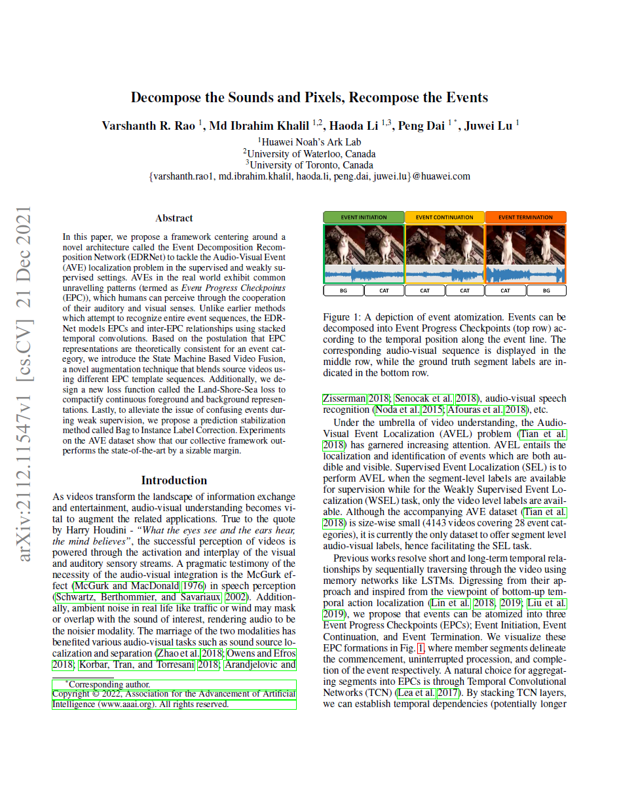

Decompose the Sounds and Pixels, Recompose the Events
| Varshanth Rao | Md Ibrahim Khalil | Haoda Li | Peng Dai* | Juwei Lu |
| Noah’s Ark Lab, Huawei Technologies Inc. Canada |
| *: corresponding author |
Abstract
Today is an era of information and data explosion, we often need to extract the data of our own attention from the massive information, and the video is the same. For example, for the kindergarten graduation video, parents are more concerned about their own children's every move,
they hope to be able to clip the clips of their interest together to make a small video saved in the phone to watch or share at any time. But they often give up this idea because of the complexity and high skill demands of video cutting.
Mate 20 series mobile phone's unique identity-oriented AI video cutting function can help users easily realize this desire on the mobile phone. This function is based on AI video comprehension technology. In the cumbersome video picture,
the key segment of the specific protagonist can be automatically extracted through AI algorithm of identity recognition. Then, with various special effects, these clips are automatically clipped into wonderful movies about the protagonist. Gather the bits you want and build your own blockbuster.
Media coverage
Our work is featured in Noah's Ark official blog!
Paper
|  | "Decompose the Sounds and Pixels, Recompose the Events", Oral presentation |
Last updated: April 2022